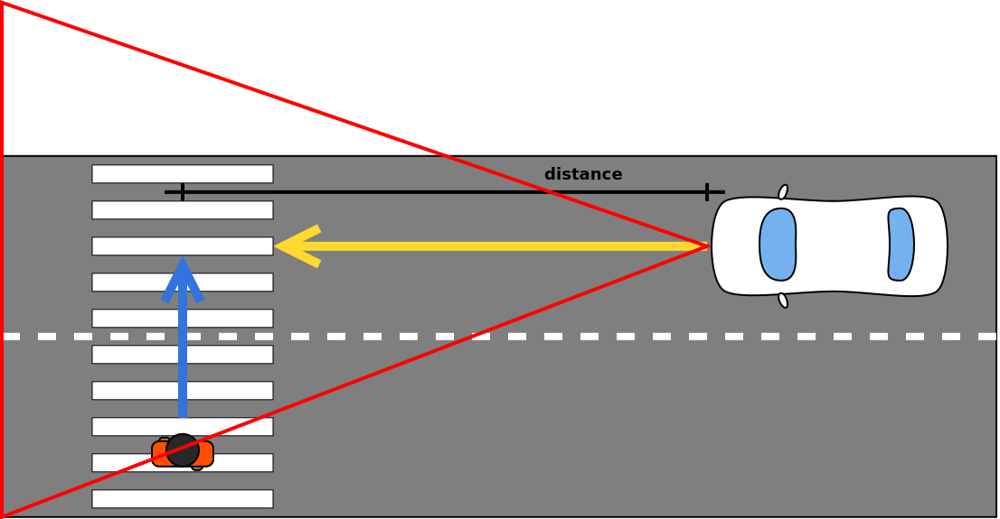
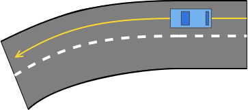
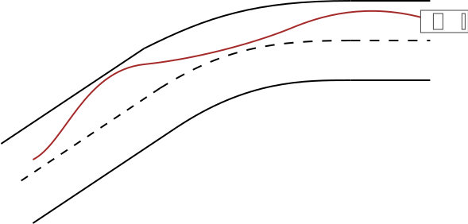

2. Sprint
Vészfékező
A modul felelőssége a radar szenzorra épülő automata vészfékező rendszer megvalósítása. A vészfékező kritikus biztonsági funkció, így nem kapcsolható ki manuálisan, de maximum 70 km/h sebességig működik. A működése két esetre bontható: ütközés statikus vagy dinamikus objektummal.
Az előbbi az egyszerűbb eset, mivel a veszélyt jelentő objektum pozíciója változatlan.

El kell dönteni, hogy az autó az aktuális irányvektort figyelembe véve ütközni fog-e az objektummal. Ha igen, az autó ismert sebességét figyelembe véve kiszámolható, hogy ehhez mennyi időre van szükség és, hogy mekkora mértékű lassulás kell ehhez.
A radar visszaadja az autó előtt levő legközelebbi releváns objektum adatait (táv, sebesség), ezekkel lehet számolni. A távolságból és az autó sebességéből meghatározható, hogy milyen lassulást kell adni az autónak, hogy még megálljon, de ne lépje túl a \( 9 m/s^2 \)-et.
Ha az ütközés elkerülhető, vizuális figyelmeztetést kell elhelyezni a vezetőnek, hogy fékezzen. Ha nem reagál, azaz továbbra is ütközési pályán vagyunk és már csak vészfékezéssel kerülhető el az ütközés, akkor a hajtásláncnak vészfékezési inputot kell adni. Ez a maximálisan megengedett, \( 9 m/s^2 \)-es lassulást (ennél nagyobb lassulás veszélyes az utasokra), akkor
Ha más nem próbálgatással meg kell határozni, hogy adott sebességről egy maximális fékezési input (100% pedál állás) mennyi idő alatt fékezi állóra az autót. A modul olyan triggerekkel vezérli az autót mint amilyenek a billentyűlenyomás kezelőtől jönnek (fékpedál állás).
Dinamikus objektumok esetében a vészfékezés elve azonos, de az ütközési pálya meghatározása összetettebb.

Másik sávban szembe jövő autóra nem kell vészfékezést kiváltani, tehát el kell tudni dönteni, hogy abban az esetben nincs ütközési pálya.

Definition of Done
- Elkerülhető ütközés esetén vizuális figyelmeztetés a sofőrnek
- Ha a sofőr nem avatkozik közbe, automatikus fékezés (az utolsó pillanatban, ahol az ütközés még elkerülhető)
- Az automatikus fékezés mértéke a sebességgel arányos, de nem lehet \( 9 m/s^2 \)-nél nagyobb
- 70 km/h felett figyelmeztetés, hogy az AEB nem tud minden helyzetet kezelni
- A vezérelt autó nem üt el gyalogost, nem megy neki fának
- Nem releváns objektumok esetében (fals pozitív) mint a szembejövő autó nem történik vészfékezés
Sávtartó automatika
A sávtartó automatika modul felelőssége a kamera szenzorra épülő Lane Keeping Assistant funkció megvalósítása.
Ezt két alapvetően kétféleképpen lehet megoldani. Az egyik a sáv széleihez viszonyítva korrigál: ha az autó elérné a sáv szélét, akkor ellenkormányoz. A másik megoldás kiszámolja a sáv közepét és azon tartja az autót.
1. Sáv széleinek használata
Itt azt lehet vizsgálni, hogy a vezérelt autó jövőbeli helyzetében metszi-e a sávot.

2. Sávközép használata
Itt a vezérelt autó középpontját lehet a sávközéphez igazítani.

Csak a 45 foknál enyhébb kanyarodású úton kell működnie, ilyenkor a kocsi a sáv szemmel látható közepét követi. Az LKA működése egy enyhe sávon belüli cikázást eredményez.

Az automatika számára kezelhetetlen forgalmi szituációkban (pl. éles kanyar, kereszteződés) el kell engednie a vezérlést és ezt a vezető tudtára kell hoznia. Legyen hozzá vizuális figyelmeztetés a műszerfalon (pl. LKA visszajelző sárga). Ha újra olyan útszakasz következik, ahol a funkció használható, akkor arról szintén legyen tájékoztatás. Ezen kívül természetesen a funkció ki- és bekapcsolható.
Definition of Done
-
A sávtartó automatika ki- és bekapcsolható
- állapota a műszerfalon látható
- Vezetői beavatkozásra kikapcsol
- 45 foknál enyhébb kanyarodású úton a kocsi a sáv szemmel láthatóan a sáv közepén marad
- Ha el kell engednie a kontrollt (az automatika számára kezelhetetlen forgalmi szituáció következik, pl. éles kanyar, kereszteződés), vizuális figyelmeztetést ad
- Ha újra elérhető a funkció (pl. elhagytuk a kanyart) vizuális indikáció (a műszerfalon)
Adaptív tempomat
A modul felelőssége a radar szenzorra épülő adaptív tempomat vezetéstámogató funkció elkészítése. Ennek a funkciónak három felhasználói esetet kell lefednie.
- Felhasználó által beállított sebesség tartása
- A táblafelismerő által közölt sebességkorlátozás betartása
- Az előttünk haladó (NPC) autó sebességének felvétele és egy (időben definiált) beállított követési távolság tartása
- Valójában ettől lesz adaptív
Az egyes ponthoz szükséges kezelőszervek már elkészültek az első sprintben és a funkcióhoz szükséges bemeneti értékek már a buszon keresztül elérhetőek. A modulnak szabályoznia kell a hajtásláncot, hogy ne léphesse túl a beállított sebességet. Ehhez olyan inputot kel biztosítania mintha az a billentyűzetről érkezne, de a tényleges vezetői input felülírja őket.
A kettes pont egy harmadik sprintes (tehát aktuálisan készülő funkciótól függ), azonban könnyen visszavezethető az első pontra. A közúti szabályozást magasabb prioritásúnak kell minősíteni. Tehát a felhasználó pl. beállít egy 70 km/h-ás célsebességet, majd érkezik egy kérés a táblafelismerőtől, hogy 50km/h a megengedett, akkor azt kell figyelembe venni.
A hármas pont egy második sprintes modultól, az NPC autók meglététől függ. Az előttünk haladó sebességéhez való igazodás a legmagasabb prioritású, hiszen hiába szeretne a vezető 70-el haladni, mikor a tábla szerint 50-nel lehet, de ha az előttünk haladó mindössze 40-el halad, akkor ahhoz kell igazodni, különben nekiütközünk. Oda kell figyelni, hogy csak a sávban előttünk haladó autót vegye figyelembe, a szembejövőt ne.
A követési távolság időben történő megadása azt jelenti, hogy a beállított (pl.) 1 másodperces követés esetén akkora távolságot kell hagyni, hogy az aktuális sebességgel haladva 1 másodperc alatt megtett út legyen a távolság: 10 m/s (36 km/h) esetében 10 méter. Ezen érték beállítására már az első sprintben készült vezérlő.

Definition of Done
- Ki- és bekapcsolható
- ACC: Állítható céltávolság (T jelű gombbal, körkörösen 0.8/1.0/1.2/1.4 másodperc)
- ACC: Állítható célsebesség (+/- gombbal, 30-160, 10-es lépésközzel)
- Bekapcsoláskor a célsebessége az aktuális sebesség, de a minimum célsebesség 30 km/h
- Ha nincs saját sávban előttünk autó, akkor a vezérelt autó tartja a kiválasztott célsebességet
- Ha a saját sávban található autó:
- Ha az előttünk levő autó lassabb, akkor fel kell venni a sebességét
- Ha gyorsabb, akkor tartja a kiválasztott sebességet
- Fékezésre kikapcsol
- AEB beavatkozásra kikapcsol